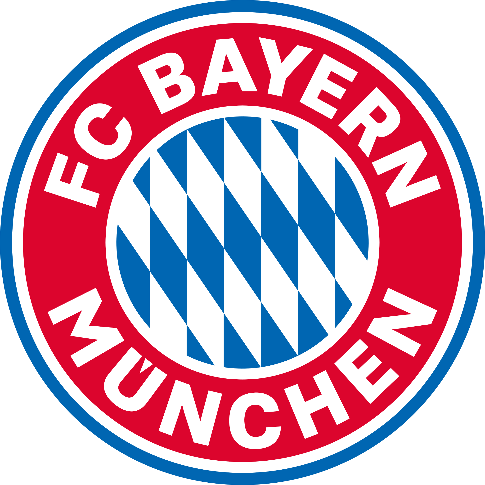

Bayern de Munique
O Bayern de Munique é aquele clube que não se limitou a qualidade e também quis quantidade. Suprema na Alemanha e na Europa em muitos momentos ao longo dos seus 121 anos, a Gigante da Baviera dificilmente passa uma temporada sem erguer uma taça e o resultado é esse: são 79 títulos. Além disso, o time também é o mais popular, o mais bem-sucedido e o mais vitorioso de seu país.